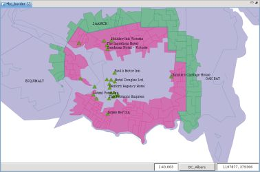

1 irudia. Mozketa mozorroa zehaztu Bbox-ez egindako aukeraketaren bidez.
Bi geruzen arteko diferentzia geometrikoa kalkulatzen du.
Mozketa eragiketak bektore motako Ebakitzaile Geruza baten featureak eta bektore motako Jatorri Geruza bat hartzen ditu eta Jatorri eta Ebakitzaile geruzen arteko diferentzia geometrikoa kalkulatzeko erabiltzen ditu, emaitza hirugarren Geruza baten gordez.
Aukeratutako featureak erabiltzea posible da, aukeraketa bat ezartzen bada, ebakitzaile eta jatorri Geruza bietan eragiketaren esparrua garbitzeko.
Desberdintasuna kalkulatzeko erabilitako Geruza bat ere ez da inola ere aldatua. Hirugarren Geruza bat da sortua lehenik, baina erabiltzaileak emaitza gordetzeko, dagoen geruza bat aukeratu dezake.
Voting areas geruzaren aurka mozketa mozorro bezala erabiliko dugun municipalities geruzako feature bakar bat aukeratuz hasiko dugu erabilera adibide hau.
1 irudiak aukeratutako Featurea erakusten du, "Victoria" udalerri geruzan.
1 irudia. Mozketa mozorroa zehaztu Bbox-ez egindako aukeraketaren bidez.
Eragiketa Espazialen Bistara goaz, eta Moztu aukeratzen dugu Eragiketen menuan.
Mozketa Eragiketaren aukera espezifikoak agertzen dira.
Eragiketaren sarrerako balioak adierazi behar ditugu, 2 irudian agertzen den bezala:

3 irudia. Aurrerakuntza leihoa.
Eragiketa bukatzen denean, emaitza gordetzeko geruza berri bat sotu bada, jadaneko Marpara automatikoki gehitua izango da.
4 irudiak sortu berri den Geruza (Moztu-1, orlegiz) erakusten du Mapari gehitua, Jatorri eta Ebakitzaile Geruzen arteko desberditasunak aplikatzearen emaitzako featurearekin.

4 irudia. Emaitza Geruza.
{kind=link}
{kind=link}